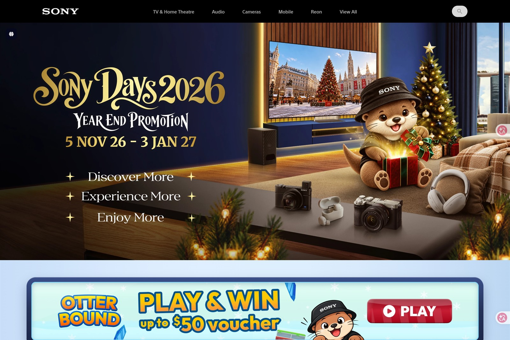

SONY
UI/UX Designer
Nov 2026 - Jan 2027
Sony Days 2026: "Otter-ly Festive" Year-End Microsite
Designed a character-led holiday microsite guided by an interactive Sony Otter mascot. Moving the "Otter Parade" mini-game ($50 voucher) and metallic tiered voucher codes ($20, $50, $100) above the fold captures impulse shoppers early, while candy-cane roadshow boards, 3x3 in-store Bingo, and golden Christmas bell store cards drive foot traffic across five retail hubs.
Mascot Storytelling
Reordered Conversion Funnel
Dual-Layer Gamification